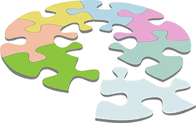
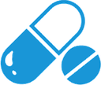

OKILYS suite · Clinical trial management
OKILYS CTMS, the modular CTMS for small clinical teams
A trial management tool designed for biotechs, sponsors and CROs still running their studies on spreadsheets. OKILYS CTMS covers site feasibility, selection, set-up and follow-up, visits and their electronically signed reports, actions, submissions, study documents and team training, planning and safety. You only switch on the modules you need; your data is handed back to you at any time.
A 30-minute demonstration on your own use cases · Client access: ctms.okilys.com ↗
Why replace Excel trackers?
Invisible errors
Free-text entries, deleted rows, duplicates, wrong dates: a shared tracker always ends up diverging from what actually happens on site.
A single source of truth
Every piece of information is entered once (visit, decision, date, approval) and appears everywhere it is displayed, with no re-typing.
ALCOA+ traceability
Who created, changed, closed, signed, and when: full audit trail, report versions, electronic signatures, justified deletions.
Your data stays yours
Nightly backups, a data package per client, full export at the end of the partnership. Hosted in France, nothing shared between clients.
Overview
The study at a glance, for the project manager and the CRA alike
The Overview page compares the study objectives (sites to activate, patients to screen and enrol, FSA / FPI / LPI / LPO / DBL milestones) with the actuals: start-up funnel, recruitment actual vs target and vs plan, visits of the next 30 days and pending reports, open actions by level, team and training, current documents, study news. Every tile opens the detail.
- Objectives and milestones set in the study profile
- Cumulative recruitment, actual vs plan
- Alerts: late visits, reports to review, overdue actions
- News published automatically (amendment, new version)

Modules à la carte
Pick your building blocks
For each client and each study, switch on only the modules you need, one by one or by pack: Feasibility & Selection, Start-up & Activation, Monitoring & Close-out, or the complete CTMS. The codes give the sponsor, the CRO and the CRAs a shared language.
Site life cycle
From pre-identification to selection (CDA, feasibility questionnaire, reminders, SSV, traced selection decision), then from selection to activation (regulatory, ethics, contract, signed greenlight, SIV, activation, closure). Two-phase dashboard per country; site directory fed automatically.
Site visits
SSV, SIV, SMV / SMC / RMV, COV: scheduling, confirmation letter, attendance sheet, questionnaire-based report that proposes the follow-up actions, follow-up letter, timelines. OKILYS templates adaptable per client and per study. Report signed by the writer, then by the reviewer (dedicated Report reviewer role); new version if corrected after signature.
Follow-up actions
Actions at study, country or site level, automatic numbering, H/M/L/O levels, mandatory assignment to a person (team or site contact), due date, time-stamped and signed follow-up log, traced closure, justified voiding, justified deletion request validated by the CTM, Excel and PDF exports.
Submissions and contracts
Regulatory, ethics committee, contract and budget tracking per site; dates inherited into the life cycle and the greenlight checklist; a document submitted then approved automatically becomes the current version in the study documents.
Reporting and settings (core)
Dashboards suggested by role and study phase, configurable pivot tables over actions, sites and patients, charts (actual vs planned recruitment, planned vs actual activation), Excel / PDF exports; study team, templates, audit log, trash.
Standalone tools
Automated report review (logic checks, checklist), CRA call follow-up from selection to close-out, site document repository, Q&A log: usable on their own, without the rest of the CTMS.
Study documents, training and news
Every version of the documents (protocol, amendments, Investigator's Brochure, consent, study plans, manuals), globally and per country. The project manager assigns the training per role and country, each member certifies reading, the team training status is one click away.
eTMF
Trial Master File structured per the TMF Reference Model: collected documents, versions, submissions, contracts, greenlights and signed reports filed automatically as drafts in the right section, verified by the CRA or the project manager; completeness per zone, country and site; ISF review from the visits; indexed ZIP export.
Planning and resources
Study plan (phases, milestones, tasks) with Gantt, actual dates read from the CTMS, resources, CRA capacity and workload; configurable by the project manager.

Safety and IMP
SAE log fed from the monitoring visits (reporting timeliness, review status), reconciled with the listing of the eCRF chosen by the client; IMP accountability review at every visit.
Four tools you can adopt on their own
Automated report review
Consistency checks on every report item (missing answers, unjustified N/A, missing follow-up actions, insufficient comments, missing versions and dates) plus coverage of the OKILYS checklist. Also works on your existing Word or PDF reports.
CRA call follow-up
The weekly CTM/CPL – CRA call grid, in three phases (selection, start-up, conduct): one column per call, one row per site, statuses inherited and highlighted when they changed. CRA absent? An update task due in 5 business days is sent; the proposals are validated by the CTM before being applied. Excel export in the familiar layout.
Site documents
Upload of collected documents (CVs, licences, GCP, DoI…) straight from the visit report, naming per the study convention, versions, fingerprints, ZIP export and hand-back.
Q&A log
Every question from sites, CRAs or the sponsor and every study-team answer, numbered, sorted by category and country, answers valid for all sites flagged. Excel export for the TMF or the investigator meeting.
Roles and permissions
One global model, customisable study by study
Admin, project manager (CTM / CPL), report reviewer, CRA, viewer: each profile sees and edits what concerns it, the CRA only their countries. The global permission model is adjusted by a study administrator to fit each type of study. Access periods per account and per study, cascading revocation, built-in user guide per profile.
- The same person can be CTM on one study and CRA on another
- Access for CRAs as well as for the sponsor's CPLs
- English interface, usable on mobile
Security and compliance, by design
Access
Named accounts, mandatory two-factor authentication, lock-out after failed attempts, limited sessions, immediate revocation.
Electronic signatures
Reports and greenlights finalised by advanced electronic signature: re-authentication, content fingerprint, time stamp, verifiable manifest.
Audit trail
Every creation, change, closure, download and signature is logged (who, when, before / after). Soft deletion with a trash.
Confidentiality
Your data serves your study and nothing else. Nothing is sent to a third-party service; hosted in France; privacy notice and terms accepted and traced.
Who is it for?
Field teams, not IT departments
Biotechs and small sponsors
Full visibility on site selection, activation and follow-up, without hiring an IT team or deploying an oversized system.
CROs
One space per client, modules per study, data packages to hand to your clients on request or at the end of the partnership.
Oversight teams
CRA follow-up and critical actions, reviewed and signed reports, traced selection decisions, team training tracked.
How it works
Scoping
A 30-minute call to choose the modules and the templates (yours or OKILYS').
Set-up
Creation of your space, study, countries and accesses; import of your existing action and CRA follow-up trackers.
Onboarding
Built-in user guide per profile, CRA onboarding, adjustment of templates and action rules.
Operations
Nightly backups, data packages, evolutions driven by your feedback.
The offer: subscription per study, per pack or per module; the number of planned sites is set in the contract. The standalone tools can be subscribed alone. Pricing and conditions on quotation.
OKILYS CTMS is designed from the field, for field teams, and developed by  INFRARCHNetwork, Security & Automation (La Vieille-Loye, France).
INFRARCHNetwork, Security & Automation (La Vieille-Loye, France).